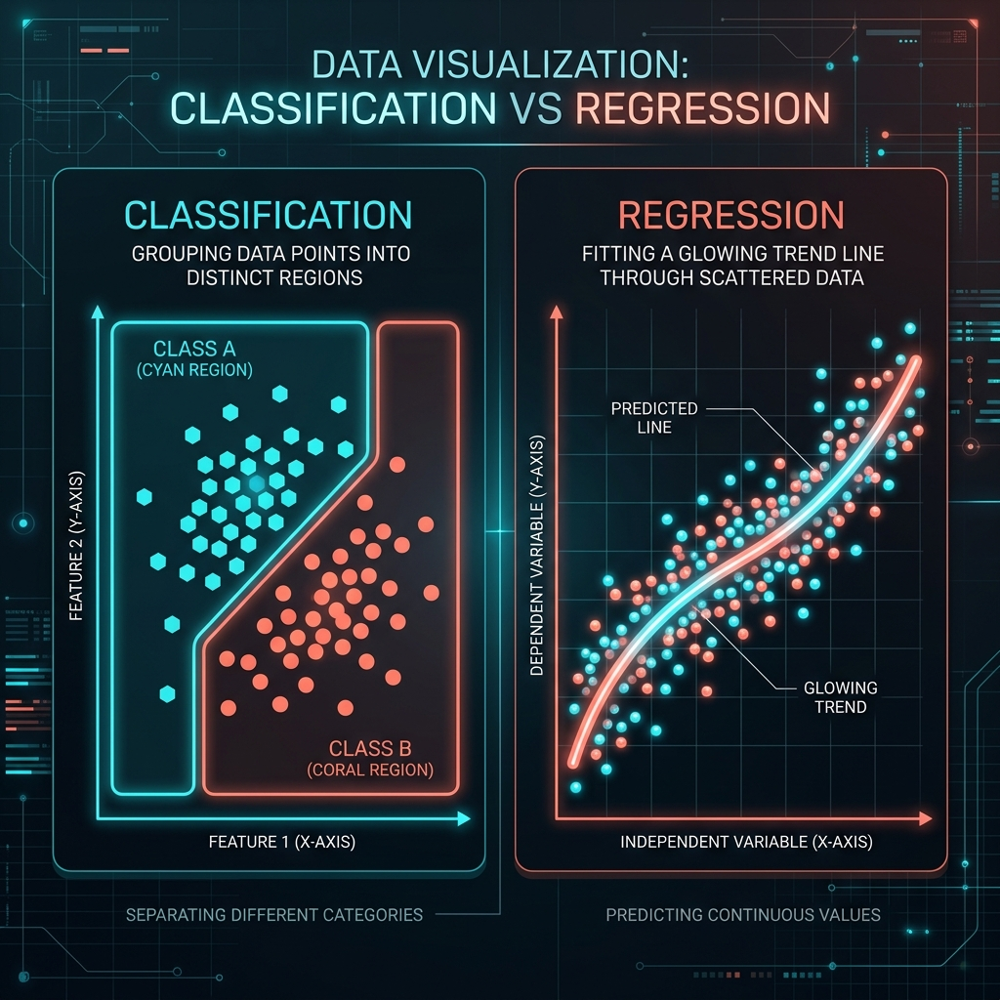

1. บทนำ (Introduction)
ในยุคที่ข้อมูลมีปริมาณมหาศาล (Big Data) ปัญญาประดิษฐ์ (Artificial Intelligence) และ การเรียนรู้ของเครื่อง (Machine Learning) ได้เข้ามามีบทบาทสำคัญในการวิเคราะห์และดึงมูลค่าจากข้อมูลเหล่านั้น
หนึ่งในแขนงที่สำคัญที่สุดคือ การเรียนรู้แบบมีผู้สอน (Supervised Learning) ซึ่งโมเดลจะเรียนรู้จากชุดข้อมูลที่มีการระบุคำตอบที่ถูกต้องไว้แล้ว (Labeled Data) เพื่อสร้างกฎหรือสมการในการทำนายผลลัพธ์ของข้อมูลใหม่ที่ไม่เคยเห็นมาก่อน
Supervised Learning แบ่งออกเป็น 2 ประเภทหลัก:
- Regression (การวิเคราะห์การถดถอย): ใช้ทำนายผลลัพธ์ที่เป็น ตัวเลขต่อเนื่อง (Continuous Values)
- Classification (การจำแนกประเภท): ใช้ทำนายผลลัพธ์ที่เป็น หมวดหมู่หรือกลุ่ม (Discrete Categories/Labels)
2. เปรียบเทียบความแตกต่าง

| หัวข้อ | Regression (การถดถอย) | Classification (การจำแนกประเภท) |
|---|---|---|
| ลักษณะของผลลัพธ์ (Output) | เป็นตัวเลขที่ต่อเนื่อง (Continuous) เช่น 1.5, 100.5, 5000 |
เป็นหมวดหมู่ (Categorical/Discrete) เช่น ใช่/ไม่ใช่, หมา/แมว |
| เป้าหมายของโมเดล | หาเส้นแนวโน้ม (Best-fit line) ที่ใกล้เคียงกับจุดข้อมูลมากที่สุด | หาเส้นแบ่งเขตแดน (Decision Boundary) เพื่อแยกกลุ่มข้อมูล |
| ตัวอย่างปัญหา | ทำนายราคาบ้าน, อุณหภูมิ, ยอดขาย | ตรวจจับอีเมลขยะ, วินิจฉัยโรค, จำแนกชนิดสัตว์ |
| ฟังก์ชันประเมินผลหลัก | MSE, RMSE, MAE, \(R^2\) | Accuracy, Precision, Recall, F1-Score |
| อัลกอริทึมที่นิยม | Linear Regression, Ridge/Lasso, SVR | Logistic Regression, Decision Tree, SVM, Naive Bayes |
3. การวิเคราะห์การถดถอย (Regression)
แนวคิดและหลักการ
เป้าหมายหลักคือการสร้างสมการทางคณิตศาสตร์ที่สามารถอธิบายความสัมพันธ์ระหว่างตัวแปรต้น (Features - \(X\)) กับตัวแปรตาม (Target - \(y\))
Simple Linear Regression:
$$ y = \beta_0 + \beta_1 x + \epsilon $$- \(y\) คือ ตัวแปรตามที่ต้องการทำนาย
- \(x\) คือ ตัวแปรต้นหรือฟีเจอร์
- \(\beta_0\) คือ จุดตัดแกน Y (Intercept)
- \(\beta_1\) คือ ความชันของเส้นตรง (Slope / Weight)
- \(\epsilon\) คือ ค่าความคลาดเคลื่อน (Error term)
ตัวชี้วัดประสิทธิภาพ (Metrics)
- MAE (Mean Absolute Error): ค่าเฉลี่ยของความคลาดเคลื่อนสัมบูรณ์
- MSE (Mean Squared Error): ค่าเฉลี่ยของความคลาดเคลื่อนกำลังสอง (ลงโทษค่าที่ผิดพลาดสูง)
- RMSE (Root Mean Squared Error): รากที่สองของ MSE ทำให้หน่วยกลับมาเท่าเป้าหมาย
- \(R^2\) (R-squared): สัมประสิทธิ์การตัดสินใจ (0 ถึง 1 ยิ่งใกล้ 1 ยิ่งดี)
import numpy as np
import pandas as pd
import matplotlib.pyplot as plt
from sklearn.model_selection import train_test_split
from sklearn.linear_model import LinearRegression
from sklearn import metrics
# 1. สร้างชุดข้อมูลจำลอง
np.random.seed(42)
X = 50 + 150 * np.random.rand(100, 1) # พื้นที่บ้าน (50-200 ตร.ม.)
y = 5 + 0.15 * X + np.random.randn(100, 1) * 3 # ราคาบ้าน
# 2. แบ่งข้อมูล
X_train, X_test, y_train, y_test = train_test_split(X, y, test_size=0.2, random_state=42)
# 3. สร้างและฝึกสอนโมเดล
model = LinearRegression()
model.fit(X_train, y_train)
# 4. ทำนายผลลัพธ์
y_pred = model.predict(X_test)
# 5. ประเมินประสิทธิภาพ
print(f"R-squared: {metrics.r2_score(y_test, y_pred):.2f}")
4. การจำแนกประเภท (Classification)
แนวคิดและหลักการ
กระบวนการจัดกลุ่มข้อมูลออกเป็นหมวดหมู่ (Classes) ที่กำหนดไว้ล่วงหน้า โมเดลจะพยายามวาด เส้นแบ่งเขตแดน (Decision Boundary) ออกจากกัน
Logistic Regression: ใช้นำสมการเส้นตรงมาครอบด้วย Sigmoid Function เพื่อบีบผลลัพธ์ให้อยู่ในช่วง 0 ถึง 1 (ความน่าจะเป็น)
Sigmoid Function:
$$ \sigma(z) = \frac{1}{1 + e^{-z}} $$ตัวชี้วัดประสิทธิภาพ (Metrics)
ประเมินจาก Confusion Matrix:
- Accuracy: สัดส่วนของการทายถูกทั้งหมด
- Precision: ทายว่า "จริง" ถูกต้องจริงๆ เท่าไร (สำคัญเมื่อ FP ส่งผลเสียรุนแรง)
- Recall / Sensitivity: จากของที่ "จริง" ทั้งหมด หาเจอเท่าไร (สำคัญเมื่อ FN ส่งผลเสียรุนแรง เช่น ตรวจโรค)
- F1-Score: ค่าเฉลี่ยฮาร์มอนิกของ Precision และ Recall
from sklearn.datasets import load_breast_cancer
from sklearn.model_selection import train_test_split
from sklearn.linear_model import LogisticRegression
from sklearn import metrics
# 1. โหลดข้อมูลมะเร็งเต้านม
data = load_breast_cancer()
X = data.data[:, :2] # เลือกมา 2 ฟีเจอร์เพื่อให้ง่าย
y = data.target # 0=Malignant, 1=Benign
# 2. แบ่งข้อมูล
X_train, X_test, y_train, y_test = train_test_split(X, y, test_size=0.25, random_state=42)
# 3. สร้างและฝึกสอนโมเดล
classifier = LogisticRegression(random_state=42)
classifier.fit(X_train, y_train)
# 4. ทำนายผลลัพธ์
y_pred = classifier.predict(X_test)
# 5. ประเมินประสิทธิภาพ
print(metrics.classification_report(y_test, y_pred, target_names=['Malignant', 'Benign']))
5. การเตรียมข้อมูล (Data Preprocessing)
ขั้นตอนที่ขาดไม่ได้ก่อนนำข้อมูลเข้าโมเดล:
- การจัดการข้อมูลที่ขาดหาย (Handling Missing Values): เติมเต็มค่าว่างด้วยค่าเฉลี่ย (Mean), มัธยฐาน (Median), หรือลบทิ้ง
- การแปลงข้อมูลหมวดหมู่เป็นตัวเลข (Encoding Categorical Data): แปลงข้อความเช่น 'สีแดง' เป็นรูปแบบตัวเลข เช่น One-Hot Encoding
- การปรับสเกลข้อมูล (Feature Scaling): โมเดลส่วนใหญ่อ่อนไหวต่อขนาดข้อมูล จึงต้องทำ Standardization (Mean=0, Std=1) หรือ Normalization (0 ถึง 1)
$$ X_{standardized} = \frac{X - \mu}{\sigma} $$